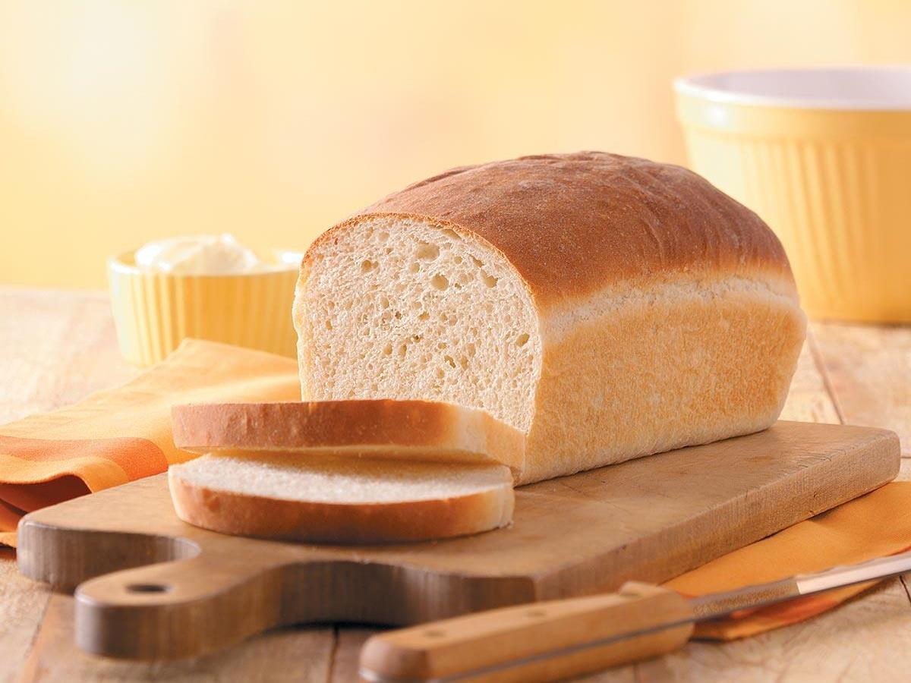

Bread

Description
Is there anything better than a peanut butter and jelly sandwich made with fresh bread that is still warm from the oven? If you don't agree, then there might be something wrong with you (unless you are allergic to peanut butter or are gluten intolerant, which in that case, I sincerely mourne your loss because you are missing out). There is something about fresh bread that changes the atmosphere in your house. Maybe it is the wonderful aroma that comes from the oven as the bread is being cooked to perfection, or maybe it is the way taste buds enthusiastically send messages to our brain that this is the best thing ever tasted. Everyone just seems a little happier with fresh bread around.
Ingredients
- 2 (.25 oz) packages active dry yeast
- 3 tbsp white sugar
- 2 1/2 cups warm water
- 6 1/2 cups bread flour
- 3 tbsp lard, softened
- 1 tbsp salt
Steps
- Dissolve yeast and sugar in warm water in a large bowl. Stir in 2 cups flour, lard, and salt. Stir in the remaining flour, 1/2 cup at a time, mixing well after each addition. When the dough comes together, turn it out onto a lightly floured surface and knead until smooth and elastic, about 8 minutes.
- Lightly oil a large bowl, then place the dough in the bowl and turn to coat with oil. Cover with a damp cloth and let rise in a warm place until doubled in volume, about 1 hour.
- Lightly grease two 9x5-inch loaf pans.
- Deflate the dough and turn it out onto a lightly floured surface. Divide the dough into two equal pieces and form into loaves. Place the loaves into the prepared pans, cover with a damp cloth, and let rise until doubled in volume, about 40 minutes.
- Preheat the oven to 425 degrees F (220 degrees C).
- Place bread in the preheated oven and lower the temperature to 375 degrees F (190 degrees C). Bake until the top is golden brown and the bottom of the loaf sounds hollow when tapped, about 30 minutes.
- Let it cool for 10 min, then enjoy! Maybe have a slice with your choice of butter and/or honey, or go all out and make a pb&j.